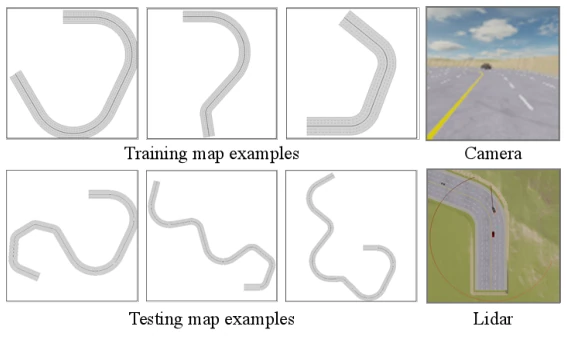
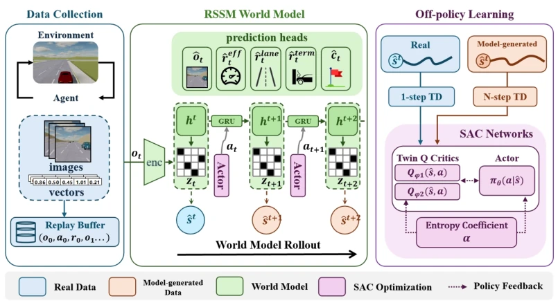
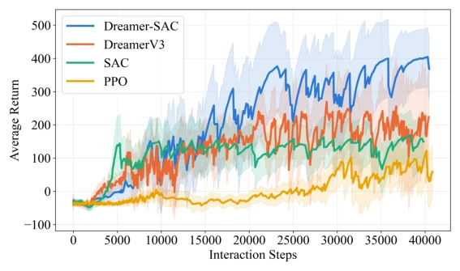
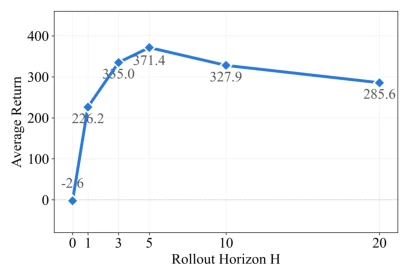
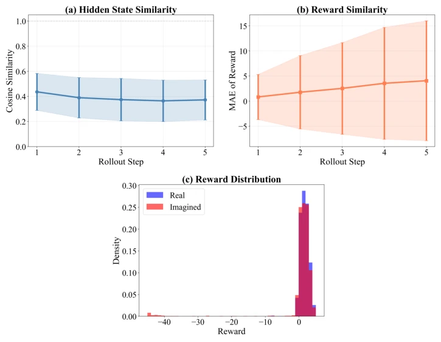
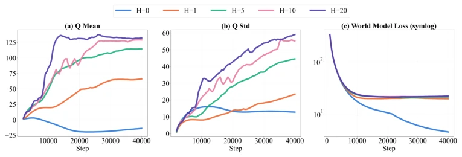

This paper adds another brick to the RL community in autonomous driving, attempting to solve the challenge of combining world models and reinforcement learning using Dreamer-SAC. The authors embed SAC into Dreamer's latent space, creating a "virtual-real combination" hybrid replay. To be honest, this idea is not new; MBPO has done similar things long ago. But the Dreamer series usually only plays on-policy; forcing off-policy here is indeed interesting. However, the "autonomous driving" in MetaDrive is after all a simulator; whether it will crash on real roads is still questionable. Moreover, the rollout horizon is tuned to 5 steps for optimal performance; slightly longer and performance drops, indicating the model is still not stable enough, exposing limited modeling capability of the latent space for long-tail scenarios. Overall, it is a solid engineering improvement, but far from a "general autonomous driving brain"; it is a typical case of "competing fiercely in simulation, but landing depends on fate", suitable as a baseline rather than a final solution.
The biggest pain point of autonomous driving decision systems is the "too high cost of trial and error" [1]. Traditional reinforcement learning (RL) requires massive interactions; real-world road testing is both expensive and dangerous [2]. Although model-based methods (MBRL) can generate virtual trajectories, model errors accumulate with rollout length, causing policies to "drift" in the latent space [19]. Existing Dreamer series mainly rely on on-policy optimization, unable to reuse historical real data, wasting valuable real interaction samples [16]. While pure off-policy SAC can reuse data, its sample efficiency remains low under high-dimensional visual inputs. This paper aims to break this dilemma: utilizing world models to generate data for efficiency while retaining real data grounding through off-policy mechanisms to prevent model bias from getting out of control. Especially for safety-critical scenarios in autonomous driving, purely model-generated trajectories tend to ignore rare collisions, leading to overly aggressive policies, thus introducing real data is crucial.

Figure 2: MetaDrive driving scenario with multimodal observations.
The overall framework is shown in Figure 1. First, a multimodal encoder (CNN+MLP) compresses images and LiDAR/state information into latent vectors. The core is the RSSM world model, responsible for predicting latent state transitions, rewards, and termination signals. The training process is divided into two steps: 1. World Model Update: optimizing RSSM's representation and prediction capabilities using real trajectories. 2. Policy Update: generating short horizon latent rollouts starting from the posterior states of real trajectories. The key innovations lie in "hybrid replay" and "multi-step targets." Real data uses 1-step TD targets to ensure accuracy; predicted data uses n-step targets to utilize future reward information and reduce bootstrap variance. Additionally, reward design includes efficiency, lane offset, and termination penalties, and termination signals are modeled using discrete distributions, optimized using three independent prediction heads respectively. This design allows SAC to utilize virtual data to accelerate exploration while correcting biases through real data. Discrete random latent states capture multimodal dynamics better than continuous Gaussian distributions, further improving model stability in complex traffic scenarios.

Figure 1: Overview of the proposed Dreamer-SAC framework. The RSSM encodes multimodal observations into a compact latent state; latent rollouts are generated from posterior states and jointly used with real transitions to optimize the SAC policy.
Experiments were conducted on the MetaDrive simulator, with scenarios being multi-lane highway curves [21]. Comparison baselines include DreamerV3, SAC, and PPO. Results show Dreamer-SAC average return 371.4, far exceeding DreamerV3 (189.2) and SAC (134.5), and with the lowest collision rate. Ablation experiments indicate that removing real data leads to significant performance decline, verifying the necessity of hybrid replay. The most interesting finding is that rollout horizon and performance show an inverted U-shape relationship (Figure 4), optimal at H=5, while too long leads to model bias accumulation. Additionally, n-step targets outperform 1-step targets, and discrete latent states perform better than continuous Gaussian distributions. This proves that short horizon virtual data can effectively assist exploration, while real data is the anchor preventing policy collapse. Figure 6 further reveals that the similarity between predicted trajectories and real trajectories decreases with depth, explaining why long horizon leads to performance degradation.

Figure 3: Training return comparison of Dreamer-SAC against DreamerV3, SAC, and PPO baselines.

Figure 4: Training return as a function of the rollout horizon H, showing an inverted-U trend with optimal performance at H = 5.

Figure 6: Comparison between real and predicted trajectories: latent representation similarity, reward prediction error, and reward distribution over rollout depth.
其他图片Other Figures

Figure 5: Q-value mean, Q-value standard deviation, and world model loss across different rollout horizons.